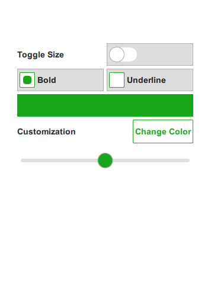
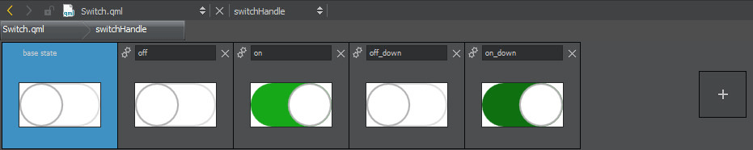

Qt Quick Controls - Flat Style
A QML app using Qt Quick Controls and a QML plugin with customized controls.
Flat Style shows how to integrate customized controls into Qt Quick Designer. The example uses a pure QML plugin to define constants in a singleton. For the declarative parts of the UI, .ui.qml files are used. These can be edited visually in Qt Quick Designer.

QML Plugin
The example contains a plugin called Theme. The plugin consists of a QML file Theme.qml and a qmldir file. The plugin is located in the imports subdirectory and added as a resource. To ensure the plugin is found by QML, we add the import directory to the import paths of the engine in main.cpp.
... engine.addImportPath(":/imports"); ...
To ensure the code model and Qt Quick Designer can find the plugin, we add the following line to flatstyle.pro.
QML_IMPORT_PATH = $$PWD/imports
All colors, font parameters, and size constants that are used in this example are defined as properties in the singleton called Theme.qml. Usually such attribute values are defined as constants as they are not suppose to change at run time. In this example, we allow the user to change some attributes like the main color, the size parameter, and some font parameters while the application is running.
Defining these attribute values in a singleton makes it easy to maintain and change them. This pattern makes it easy to implement theming.
Implementing Custom Controls
The plugin also contains a style for a couple of controls that implement a custom look and feel. This style is located in Flat and is set as the style for the application in qtquickcontrols2.conf.
The example uses the states of a Qt Quick Item to implement the different states of a control. This has the advantage that we can define the custom look in Qt Quick Designer and we can easily verify the different states of a control. To edit the indicator of a switch in Qt Quick Designer we can open Switch.qml and then enter the implementation of the indicator called switchHandle using the combo box on the top next to the combo box for the open documents.

The application itself is just a simple form that allows the user to adjust a couple of parameters of the custom controls. The user can choose another main color, set the font to bold or underline, and increase the size of the controls by toggling a switch.
MainForm.ui.qml is just the pure declarative definition of the form, while flatstyle.qml instantiates the form and implements the logic.
Running the Example
To run the example from Qt Creator, open the Welcome mode and select the example from Examples. For more information, visit Building and Running an Example.